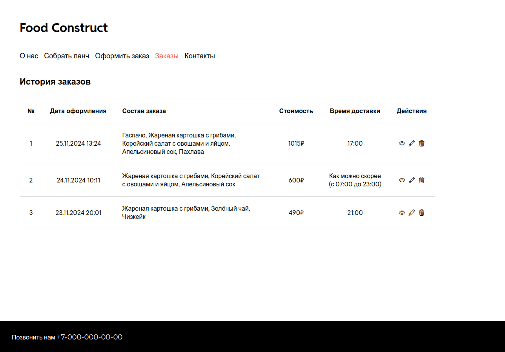

Добавьте страницу просмотра истории заказов и реализуйте функции редактирования и удаления заказов.
Порядок выполнения
1. Добавьте страницу "Заказы", разместите ссылку на неё в навигационном меню. Примерный макет страницы приведён ниже.
- На странице должен располагаться список заказов, оформленных ранее текущим пользователем. Сортировка списка – по убыванию даты оформления (т. е. сначала новые заказы).
- Для каждого заказа должны отображаться: порядковый номер в списке, дата оформления заказа, состав заказа (названия блюд, перечисленные через запятую), стоимость заказа, время доставки (для заказов ко времени, для остальных – подпись "Как можно скорее (с 7:00 до 23:00)"), кнопки "Подробнее", "Редактирование", "Удаление".
- Вместо кнопок можно использовать иконки (например, Bootstrap Icons).
2. Реализуйте функциональность кнопок "Подробнее", "Редактирование", "Удаление".
- По нажатию на кнопку "Подробнее" должно открываться модальное окно с полной информацией о заказе (см. макет ниже).
- По нажатию на кнопку "Редактирование" должно открываться модальное окно с формой редактирования заказа (см. макет ниже). Значения полей формы должны быть установлены значениями соответствующих полей редактируемого заказа. Для редактирования доступны поля full_name, email, phone, delivery_address, delivery_type, delivery_time, comment.
- По нажатию на кнопку "Удаление" должно открываться модальное окно подтверждения удаления (см. макет ниже).
- В правом верхнем углу каждого модального окна должен быть "крестик", по нажатию на который модальное окно закрывается. Внизу модального окна должны располагаться кнопки действий: для просмотра – "Ок" (закрытие окна), для редактирования – "Сохранить" (отправка данных на сервер) и "Отмена" (закрытие окна), для удаления – "Да" (отправка запроса на сервер) и "Отмена" (закрытие окна).
- При возникновении ошибок при отправке запроса или его обработке на стороне сервера пользователю должно быть отображено уведомление об ошибке. В случае успешного выполнения операции (редактирования, удаления), модальное окно должно быть скрыто, и пользователю должно быть отображено уведомление об успешном завершении операции (например, "Заказ успешно изменён"). Формат отображения уведомлений на усмотрение студента.
- При успешном изменении или удалении заказа список заказов должен быть обновлён (т. е. удалённый заказ должен быть убран из списка, а информация об изменившемся заказе должна быть обновлена).

API URL
- Для тех, кто использует хостинг Московского Политеха: http://lab8-api.std-900.ist.mospolytech.ru
- Для тех, кто использует Netlify или GitHub Pages: https://edu.std-900.ist.mospolytech.ru
Инструкция по работе с API
Для получения доступа к API необходимо пройти процедуру авторизации. Для авторизации нужно указать в качестве параметра запроса api_key значение уникального ключа, который выдаётся каждому пользователю. Ключ представляет собой идентификатор UUIDv4, который является случайным 16-байтным номером (например, 123e4567-e89b-12d3-a456-426655440000).
Для получения ключа необходимо перейти по ссылке, которая выложена в СДО Московского Политеха
Обратите внимание, что параметр api_key всегда передаётся в строке запроса.
Пользователь может просматривать, редактировать и удалять только свои заказы. В один момент времени в базе данных может быть не более 10 заказов, созданных одним и тем же пользователем.
Если пользователь попробует совершить действие, не пройдя авторизацию, в качестве ответа на его запрос придёт сообщение:
{"error": "Для получения доступа к API необходимо пройти процедуру авторизации. Для этого нужно передать в запросе персональный API Key."}
При передаче параметров в POST- и PUT-запросах данные должны передаваться в теле запроса в формате application/json (нужно вручную сериализовать данные и установить значение заголовка Content-Type) или multipart/form-data (достаточно при отправке данных формы воспользоваться объектом FormData).
При оформлении заказа в запросе к серверу должны быть указаны значения обязательных полей:
| Название | Тип | Обязательное | Только для чтения | Примечание |
|---|---|---|---|---|
| id | Integer | Да | Устанавливается сервером. | |
| full_name | String | Да | ||
| String | Да | |||
| subscribe | Boolean | Нет | Допустимы значения 0 и 1. | |
| phone | String | Да | ||
| delivery_address | String | Да | ||
| delivery_type | String | Да | Допустимы значения "now" и "by_time". | |
| delivery_time | Time | Нет |
Значение передаётся в формате HH:MM. Доступное время доставки: с 7:00 до 23:00 с шагом 5 минут. Не должно быть пустым, если delivery_type=by_time. Не должно быть раньше текущего времени. |
|
| comment | String | Нет | ||
| soup_id | Integer | Нет | Обязательность поля зависит от состава комбо. | |
| main_course_id | Integer | Нет | Обязательность поля зависит от состава комбо. | |
| salad_id | Integer | Нет | Обязательность поля зависит от состава комбо. | |
| drink_id | Integer | Да | ||
| dessert_id | Integer | Нет | ||
| created_at | DateTime | Да | Устанавливается сервером. | |
| updated_at | DateTime | Да | Устанавливается сервером. | |
| student_id | Integer | Да | Устанавливается сервером. |
Доступные пользователю действия представлены в таблице:
| Действие | Метод и путь | Формат ответа | Примечание |
|---|---|---|---|
| Получить данные всех блюд | GET /labs/api/dishes | JSON [{item1},{item2},...{itemN}] | |
| Получить данные конкретного блюда | GET /labs/api/dishes/{int:dish_id} | JSON {Item} | Вместо {int:dish_id} нужно подставить целое число – идентификатор блюда. |
| Получить данные всех заказов | GET /labs/api/orders | JSON [{item1},{item2},...{itemN}] | |
| Получить данные конкретного заказа | GET /labs/api/orders/{int:order_id} | JSON {Item} | Вместо {int:order_id} нужно подставить целое число – идентификатор заказа. |
| Создать новый заказ | POST /labs/api/orders | JSON {newItem} | Нужно передать значения всех обязательных полей. |
| Изменить заказ | PUT /labs/api/orders/{int:order_id} | JSON {updateItem} |
Вместо {int:order_id} нужно подставить целое число – идентификатор заказа. Достаточно передать только значения изменившихся полей. |
| Удалить заказ | DELETE /labs/api/orders/{int:order_id} | JSON {Item} | Вместо {int:order_id} нужно подставить целое число – идентификатор заказа. |
Защита
Чтобы сдать лабораторную, необходимо выполнить все требования.